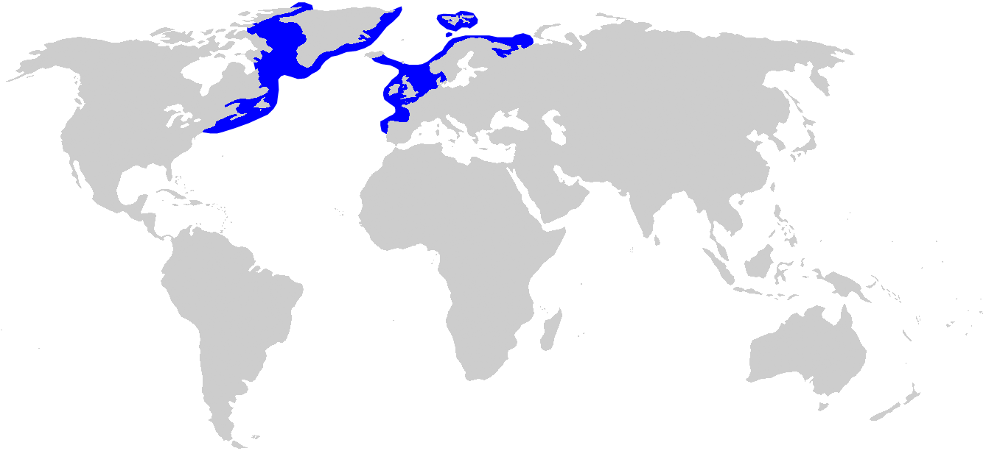
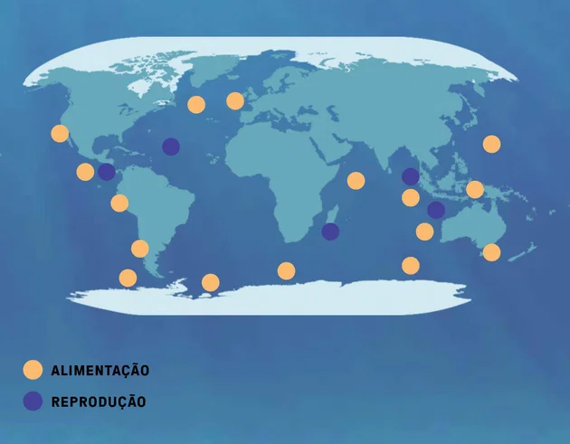
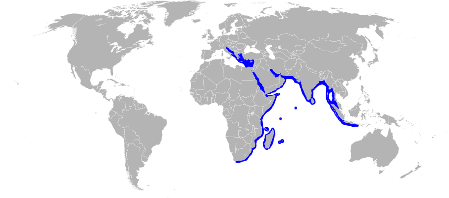

O tubarão-da-groenlândia é o vertebrado de maior longevidade do mundo. Pode viver 400 anos — o dobro da idade do animal terrestre mais longevo: a tartaruga-gigante. Pode haver um indivíduo nesse exato momento nadando pelos oceanos que já estava vivo durante a peste bubônica de Londres e na posse presidencial de George Washington, nos Estados Unidos, em 1789. Apesar do nome, o tubarão-da-groenlândia não é encontrado apenas na Groenlândia: foi avistado até mesmo no oeste do Caribe. Também conhecido como tubarão-boreal, esse animal vive em águas extremamente frias e profundas, por isso é muito menos estudado do que muitas das mais de 500 outras espécies de tubarões. Também é um dos tubarões mais lentos: seu nome científico, Somniosus microcephalus, significa “sonolento de cabeça pequena”. No entanto esses animais raros podem ser superpredadores.
É normalmente encontrado a mais de 1.200 metros de profundidade no Ártico e nos mares do norte do Atlântico, mas já foi observado em lugares tão distantes como a Argentina e a Antártida. Alimentam-se principalmente de peixes, e algumas vezes até focas. Já foram encontradas partes de cavalos, ursos-polares e alces em estômagos de tubarões da Groenlândia.
Este tubarão faz parte da gastronomia da Islândia, sendo o Hákarl a iguaria mais conhecida com ele confeccionada. Consiste em peixe putrefacto e seco. Tanto na Groenlândia como na Islândia, a carne do tubarão-da-groenlândia é também utilizada como comida para cão, depois de seca.


Os filhotinhos já nascem pesando mais de 2 toneladas e medindo cerca de 8 metros. Durante a fase de amamentação, eles ganham incríveis 90 kg por dia, sustentados pelo alto valor nutritivo do leite materno.
Estão presentes em todos os oceanos: Atlântico, Pacífico, Índico e Antártico, possuem hábitos migratórios bem definidos. Durante os verões polares, deslocam-se para águas frias e ricas em nutrientes (como a Antártica e o Golfo de São Lourenço, no Canadá) para se alimentar. No inverno, migram para águas tropicais e subtropicais mais quentes para se reproduzir alimentam-se quase que exclusivamente de krill, ocasionalmente, podem ingerir pequenos peixes e lulas de forma acidental, elas nadam em alta velocidade com a boca aberta, engolindo grandes volumes de água e krill, em seguida, fecham a boca e usam a língua para empurrar a água para fora através das cerdas, retendo o alimento.
A espécie estritamente protegida e não é utilizada na culinária, a caça comercial deste animal é proibida globalmente por leis internacionais e por tratados como os da Comissão Baleeira Internacional, já que a espécie está ameaçada de extinção.


o Peixe-Leão tornou-se uma preocupação significativa em algumas regiões, como o Caribe e partes do Atlântico Ocidental, onde foi introduzido acidentalmente ou deliberadamente. Sua introdução nessas áreas pode ter efeitos negativos sobre os ecossistemas locais, pois são predadores vorazes e competem com espécies nativas por alimentos e espaço.
Nativo das águas tropicais do Indo-Pacífico, Mar do Caribe, Golfo do México e litoral do Brasil, prefere águas salgadas e rasas, habitando principalmente recifes de corais, fundos rochosos e estuários, embora seja comum em águas rasas, também pode ser encontrado em profundidades que chegam a 100 metros, sendo carnívoro e alimenta-se fundamentalmente de peixes pequenos e invertebrados, para a caça ele se camuflado perto de recifes, encurrala a presa com suas nadadeiras e a engole inteira em uma fração de segundo através de sucção.
O uso do peixe-leão na culinária, além de ser uma inovação gastronômica, tem sido uma excelente oportunidade para o controle da espécie invasora e uma fonte de alimento e renda para as comunidades locais através do comércio. Na Colômbia e muitos outros países da América Central, não existem restrições para a pesca do peixe-leão, pelo qual é possível que dessa vez a sobrepesca de uma espécie, possa salvar muitas outras.
